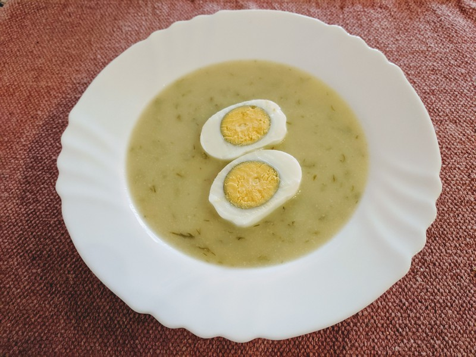

Minulý týden se nám život vrátil zdánlivě do normálu. Péťa začal zase chodit do kanceláře a já se po více než dvou měsících vypravila do centra. Jako první jsem samozřejmě vyrazila na Zelňák pro proviant, kde jsem od jedné sympatické babičky koupila čerstvý kopr a hned si vzpomněla na tenhle polévkový recept z časopisu Marianne, který jsem měla v plánu už dlouho vyzkoušet.
- olivový olej
- 2 oloupané cukety
- 1 větší cibule
- 2 větší brambory
- 50g opraných a okapaných biojáhel
- sůl a čerstvě mletý pepř
- 1,5l vody
- 3 lžíce umeocta
- velká hrst čerstvého kopru
Očistíme si veškerou zeleninu a nakrájíme na větší kusy. Jáhly propereme a necháme okapat v cedníku. Na olivovém oleji na mírném ohni pomalu opékáme osolenou zeleninu cca 5-10 minut, přidáme jáhly a za stálého míchání je mírně osmahneme. Poté zalejeme horkou vodou a vaříme asi 15-20 minut, dokud nejsou zelenina a jáhly měkké. Rozmixujeme ponorným mixérem do hladkého krému, dochutíme umeoctem, kouskem másla, koprem, solí a pepřem. Můžeme přidat také na zjemnění trochu smetany. Servírujeme s vajíčkem natvrdo nebo s kostičkami opečeného tofu.

Komentáře (2)
Komentáře jsou uzavřené.